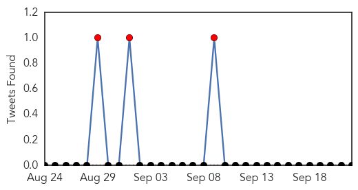
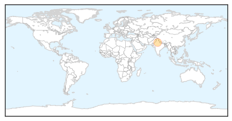
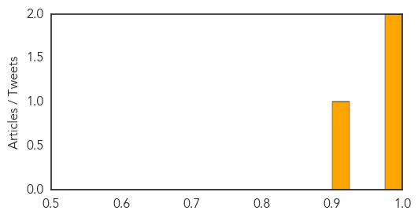
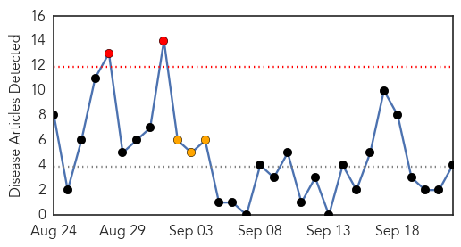

Swine Flu
30-Day Web Trend
3 alerts, 4 warnings
30-Day Twitter Trend
3 alerts, 0 warnings

Article Locations
Article Confidences
Top Articles:
Top Tweets:
-
No tweets found for Sep 22, 2015
Measles
30-Day Web Trend
2 alerts, 3 warnings

30-Day Twitter Trend
0 alerts, 0 warnings

Article Locations

Article Confidences

Top Articles:
Top Tweets:
-
No tweets found for Sep 22, 2015